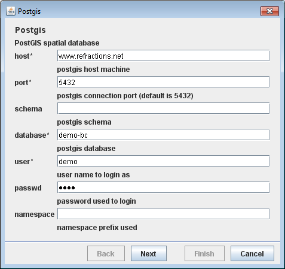
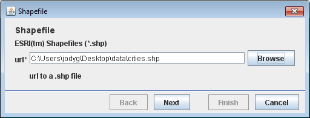
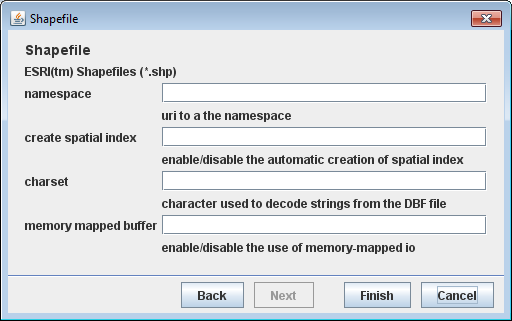
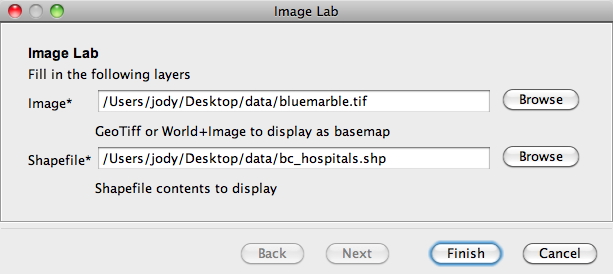

Wizard classes¶
Wizards are dialogs that prompt for user inputs, possibly with a sequence of dialog pages (think Next and Back buttons). They also provide validation of the inputs.
Swing doesn’t have a wizard class so GeoTools has filled this void with JWizard.
JDataStoreWizard¶
Quickly collect connection parameter information for a DataStore:
The DataStore api makes use of a list of Parameter**s to describe valid connection parameters. You can make use of **JDataStoreWizard to prompt the user for appropriate values.
You can allow your user to select the kind of DataStore they want to use:
JDataStoreWizard wizard = new JDataStoreWizard(); int result = wizard.showModalDialog(); if (result == JWizard.FINISH) { Map<String, Object> connectionParameters = wizard.getConnectionParameters(); dataStore = DataStoreFinder.getDataStore(connectionParameters); if (dataStore == null) { JOptionPane.showMessageDialog(null, "Could not connect - check parameters"); } }Allowing your users for example to work with PostGIS:
You can limit your user to a specific kind of file extension:
JDataStoreWizard wizard = new JDataStoreWizard("shp"); int result = wizard.showModalDialog(); if (result == JWizard.FINISH) { Map<String, Object> connectionParameters = wizard.getConnectionParameters(); dataStore = DataStoreFinder.getDataStore(connectionParameters); if (dataStore == null) { JOptionPane.showMessageDialog(null, "Could not connect - check parameters"); } }Presented as as a two page wizard with file selection:
And advanced settings:
Or you can prompt for a specific datastore; such as ShapefileDataStoreFactory:
DataStoreFactorySpi format = new ShapefileDataStoreFactory(); JDataStoreWizard wizard = new JDataStoreWizard(format); int result = wizard.showModalDialog(); if (result == JWizard.FINISH) { Map<String, Object> connectionParameters = wizard.getConnectionParameters(); dataStore = DataStoreFinder.getDataStore(connectionParameters); if (dataStore == null) { JOptionPane.showMessageDialog(null, "Could not connect - check parameters"); } }
{kind=link}
{kind=link}
{kind=link}
JParameterListWizard¶
The process api also makes use of a list of Parameter**s to describe inputs. You can make use of **JParameterListWizard to prompt the user for appropriate values.
Defining your own parameters represents the quickest way to set up a wizard for use.
Example:
List> list = new ArrayList>();
list.add(new Parameter("image", File.class, "Image",
"GeoTiff or World+Image to display as basemap",
new KVP( Parameter.EXT, "tif", Parameter.EXT, "jpg")));
list.add(new Parameter("shape", File.class, "Shapefile",
"Shapefile contents to display", new KVP(Parameter.EXT, "shp")));
JParameterListWizard wizard = new JParameterListWizard("Image Lab",
"Fill in the following layers", list);
int finish = wizard.showModalDialog();
if (finish != JWizard.FINISH) {
System.exit(0);
}
File imageFile = (File) wizard.getConnectionParameters().get("image");
File shapeFile = (File) wizard.getConnectionParameters().get("shape");
JWizard¶
The base class for these wizards is JWizard, you can use this base class in the construction of your own custom wizards.
Example¶
The following example shows how to create a wizard from scratch using the base classes mentioned above.
- Page 1 .. image:: /images/jwizard1.gif
- Page 2 .. image:: /images/jwizard2.gif
You can download the complete example here: JExampleWizard.java
Create the wizard
public class JExampleWizard extends JWizard { private static final long serialVersionUID = 2103905729508952829L; /** Value collected by the first page */ Double x = null; /** Value collected by the first second page */ Double y = null; public JExampleWizard() { super("Example Wizard"); JPage page1 = new Page1("page1"); page1.setBackPageIdentifier(null); page1.setNextPageIdentifier("page2"); registerWizardPanel( page1 ); JPage page2 = new Page2("page2"); page2.setBackPageIdentifier("page1"); page2.setNextPageIdentifier(JPage.FINISH); registerWizardPanel(page2); setCurrentPanel("page1"); } public double getAnswer() { return x+y; }
Note that the wizard pages are:
- constructed with simple string id
- hooked up to each other by describing their next and previous id
- you can change these values at runtime to have a dynamic wizard that changes the next page based on user input
Create the first wizard page
To construct this wizard we begin by making the page in much the same way that we would when creating a JDialog or JFrame, except that here we derive our page class from JPage:
class Page1 extends JPage { public Page1(String id) { super( id); } JTextField field; @Override public JPanel createPanel() { JPanel page = new JPanel( new MigLayout() ); page.add(new JLabel("X:"), "skip"); page.add( field = new JTextField(15), "span, growx"); return page; } @Override public void preDisplayPanel() { if( x == null ){ field.setText(""); } else { field.setText( x.toString() ); } field.addKeyListener( getJWizard().getController() ); }; @Override public void preClosePanel() { field.removeKeyListener( getJWizard().getController() ); }; public boolean isValid() { try { String txt = field.getText(); x = Double.valueOf( txt ); return true; } catch (NumberFormatException invalid ){ return false; } }; };
Note that we override the JPage.isValid method to check that the user has entered a valid number.
- getJWizard().getController() is added as a listener to the field. The controller implements most swing listeners allowing you to use it with fields, lists and buttons as needed
- The controller is responsible for listening to any and all user input resulting in its syncButtonsToPage() method being callled.
- The syncButtonsToPage() method will use page.isValid() to determine if the Next or Finish buttons should be enabled.
We can create the second page in a similar fashion:
class Page2 extends JPage { public Page2( String id) { super( id ); } JTextField field; @Override public JPanel createPanel() { JPanel page = new JPanel( new MigLayout() ); page.add(new JLabel("Y:"), "skip"); page.add( field = new JTextField(15), "span, growx"); return page; } @Override public void preDisplayPanel() { if( y == null ){ field.setText(""); } else { field.setText( y.toString() ); } field.addKeyListener( getJWizard().getController() ); }; @Override public void preClosePanel() { field.removeKeyListener( getJWizard().getController() ); }; @Override public boolean isValid() { try { String txt = field.getText(); y = Double.valueOf( txt ); return true; } catch (NumberFormatException invalid ){ return false; } }; };
Using the wizard:
JExampleWizard wizard = new JExampleWizard(); System.out.println("Show wizard " + wizard.getTitle()); int result = wizard.showModalDialog(); System.out.print("Wizard completed with:"); switch (result) { case JWizard.CANCEL: System.out.println("CANEL"); break; case JWizard.FINISH: System.out.println("FINISH "+wizard.getAnswer()); break; case JWizard.ERROR: System.out.println("ERROR"); break; default: System.out.println("unexpected " + result); }